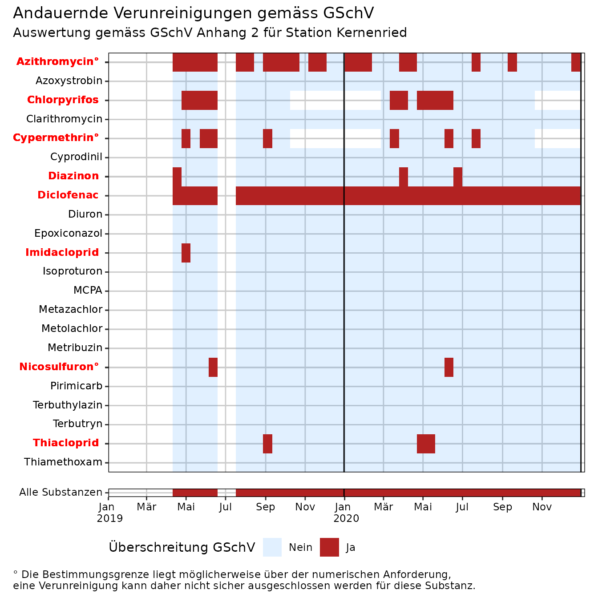
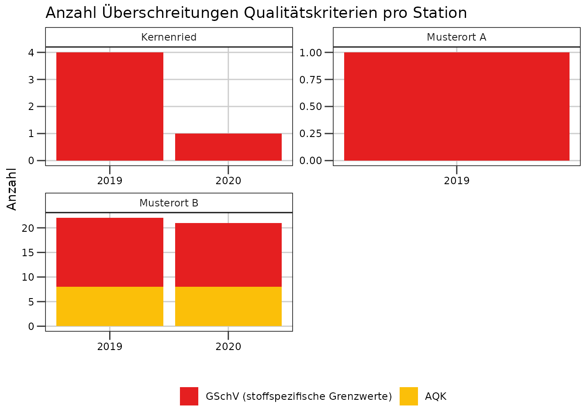
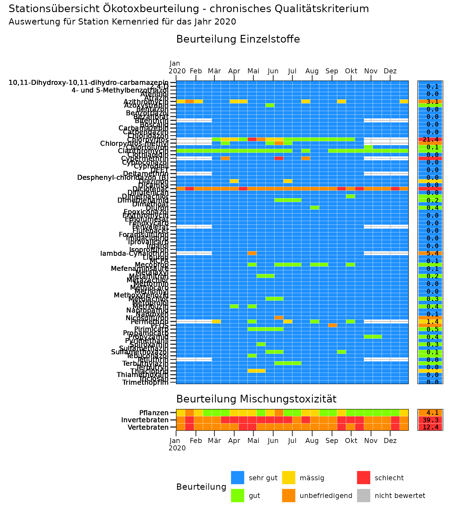
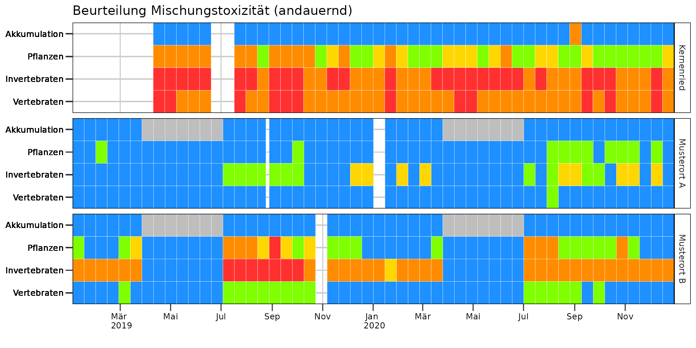

mvwizr
mvwizr.RmdPaket laden
mvwizr kann, nachdem es einmal installiert wurde, ganz einfach geladen werden. Dabei wird auch die Versionsnummer angezeigt (ab v1.2). Es lohnt sich, die Neuigkeiten zum Paket zu verfolgen und auf neue Versionen zu aktualisieren, um von Fehlerbehebungen und neuen Funktionen zu profitieren.
Daten einlesen und Verarbeiten
mvwizr unterscheidet grob zwischen zwei Arten von Daten respektive Dataframes, die von den Funktionen im Paket verwendet werden:
MV-Daten
Output der Funktionen einlesen_nawa(),
batch_einlesen_nawa() und einlesen_mv_gbl. Es
handelt sich hierbei um MV-Daten, die mit über den
BAFU-Datenaustausch-Schlüssel und die VSA Substanz-Tabelle mit der VSA
Substanz-ID verknüpft werden. Substanzen, die nicht verknüpft werden
können, werden entfernt (mit Warnung). Duplikate werden ebenfalls
entfernt. Falls Bestimmungsgrenzen vorhanden sind, so wird (pro
Datensatz und Substanz) die minimale und maximale Bestimmungsgrenze
bestimmt. Alle Einheiten von Mikroverunreinigungen werden automatisch
auf µg/l normalisiert.
Beispiel:
nawa_mv_pfad <- system.file("extdata", "NAWA_ohne_bSaP_Bsp.xlsx", package = "mvwizr")
# Falls kein Pfad zu VSA- und BAFU-Tabellen angegeben wird, verwendet das Paket die gebundelte Version.
mv_df_bsp <- einlesen_nawa(nawa_mv_pfad)
#> Warning: ! VSA-Lookup: 2 mehrfache Bezeichnungen (VSA Parameter-ID) pro Substanz_ID
#> gefunden. Verwende tiefere Substanz_ID.
#> ℹ Betroffen: 8_2-FTCA, SiO2
#> ℹ Lese MV-Daten von Excel-Datei /home/runner/work/_temp/Library/mvwizr/extdata/NAWA_ohne_bSaP_Bsp.xlsx ein.
#> ℹ Versuche Start des Tabellen-Headers der Datei /home/runner/work/_temp/Library/mvwizr/extdata/NAWA_ohne_bSaP_Bsp.xlsx zu erraten.
#> ✔ Erkannter Header-Start: Zeile 8.
#> ℹ Versuche Sprache der Datei /home/runner/work/_temp/Library/mvwizr/extdata/NAWA_ohne_bSaP_Bsp.xlsx zu erraten.
#> ✔ Erkannte Sprache: DE.
#> ℹ Versuche Parameter-Feld der Datei /home/runner/work/_temp/Library/mvwizr/extdata/NAWA_ohne_bSaP_Bsp.xlsx zu erraten.
#> ✔ Erkannter Parameter: BAFU_Parameter_ID.
#> ! Bestimmungsgrenzen wurden nicht als Zahlen eingelesen - versuche Typenkonvertierung.
#> ℹ Normalisiere Einheiten der MV-Daten auf µg/l.
#> ℹ Max./min. Bestimmungsgrenzen der MV-Daten bestimmen...
nrow(mv_df_bsp)
#> [1] 131RQ-Ue-Daten
Output der Funktion berechne_rq_ue: Enthält
Überschreitungen (gemäss GSchV) und Risikoquotienten nur für Substanzen,
falls es für diese ein Qualitätskriterium der Stufe 1 oder 2 gibt gemäss
Liste Qualitätskriterien Ökotoxzentrum - alle anderen Messungen werden
herausgefiltert! Beispiel:
rq_ue_df_bsp <- berechne_rq_ue(mv_df_bsp)
nrow(rq_ue_df_bsp)
#> [1] 131Daten plotten
Die Plotfunktionen verlangen entweder nach den MV-Daten oder nach den RQ-Ue-Daten (siehe oben): Alle Plotfunktionen, die nur MV-Daten plotten ohne Bewertung, benötigen nur die MV-Daten. Alle Plotfunktionen, die GSchV-Überschreitungen feststellen oder eine Ökotoxizität (oder Mischtoxizität) bewerten, benutzen die RQ-Ue-Daten. Im Folgenden werden einige Beispielgrafiken, die mit mvwizr produziert wurden, gezeigt. Es handelt sich dabei nur um eine Auswahl.
MV-Daten-Plots
Verlaufsgrafiken für Mischproben
Wir können den Verlauf für einzelne Substanzen für einzelne Stationen inklusive der minimalen und maximalen oder der effektiven Bestimmungsgrenzen (falls vorhanden) plotten. Dafür gibt es verschiedene Darstellungsarten; z.B. mittels Barplot:
# Standardmässig mit minimaler und maximaler Bestimmungsgrenze geplottet
plot_misch_verlauf(mvdaten_beispiel_mvwizr, regulierungen_mvwizr, stationscode = "URT010", plot_typ = "barplot", id_substanz = 71)
# Plot mit effektiver Bestimmungsgrenze
plot_misch_verlauf(mv_df_bsp, stationscode = "101099", plot_typ = "barplot", id_substanz = 71, bg_typ = "effektiv")Andererseits ist auch die Darstellung von Summen möglich (z.B. aller Pestizide hier). Falls dafür der “Treppen”-Plot ausgewählt wird, muss sichergestellt werden, dass es keine überlappenden Intervalle gibt, da eine Visualisierung mit Linien sonst nicht möglich ist:
plot_misch_verlauf(mvdaten_beispiel_mvwizr, regulierungen_mvwizr, stationscode = "URT010", plot_typ = "treppen", zulassungstyp = "[BP]")
Bei der Summendarstellung mit Barplots kann schliesslich auch die Verteilung pro (arbiträrer) Kategorie gezeigt werden, wobei der Name der Variable für die Kategorie angegeben werden muss (hier “PARAMETERGRUPPE”):
plot_misch_verlauf(mvdaten_beispiel_mvwizr, regulierungen_mvwizr, "URT010",
plot_typ = "barplot_gruppen",
zulassungstyp = "Alle", plot_parametergruppe = "PARAMETERGRUPPE"
)
RQ-Ue-Daten-Plots
Überschreitungsgrafiken
mvwizr bietet auch verschiedene Grafiken an, um (kurzzeitige oder andauernde) Überschreitungen der GSchV-Grenzwerte zu visualisieren. Im folgenden Beispiel werden andauernde Überschreitungen pro Substanz (d.h. Probendauer >= 10 Tage) für die Station “URT010” in den Jahren 2019 bis 2020 ausgewertet.
plot_misch_ue(rq_ue_beispiel_mvwizr, stationscode = "URT010", plot_typ = "andauernd", jahr = c(2019, 2020))
#> Warning: Removed 1 row containing missing values or values outside the scale range
#> (`geom_vline()`).
#> Removed 1 row containing missing values or values outside the scale range
#> (`geom_vline()`).
Auch summierte Grafiken (ohne Aufschlüsselung nach Substanz) sind möglich; im Folgenden eine Zeitreihe für die Überschreitung von akuten Qualitätskriterien:
plot_misch_ue_qk(rq_ue_beispiel_mvwizr, qk = "akut", detailliert = FALSE)
Ökotoxgrafiken
Die Ökotoxgrafiken zeigen Einzel- und Mischungstoxizitäten auf und werden für die Beurteilung gemäss MSK benötigt. Im folgenden Beispiel ist die Stationsübersicht Ökotoxikologie für andauernde Belastungen abgebildet.
plot_misch_oekotox_uebersicht(rq_ue_beispiel_mvwizr, stationscode = "URT010", jahr = 2020) Der Verlauf von Mischungstoxizitäten kann auch einzeln visualisiert werden:
plot_misch_mixtox_verlauf(rq_ue_beispiel_mvwizr, modus = "andauernd")Neu (ab mvwizr v1.2) ist auch die Anzeige der Akkumulation (Secondary toxicity) möglich (bei allen Plot-Funktionen mit Anzeige der Mischungstoxizität):
plot_misch_mixtox_verlauf(rq_ue_beispiel_mvwizr, modus = "andauernd", optin_mischtox_S = TRUE)
Schliesslich sind auch Zeitreihen der Häufigkeitsverteilung der verschiedenen Ökotox-Bewertungen möglich (folgend für kurzzeitige Verunreinigungen für die Station URT010):
plot_misch_mixtox_haeufigkeit(rq_ue_beispiel_mvwizr, stationscode = "URT010", modus = "kurzzeitig")Stichproben
Stichproben können mittels Raster-Darstellung pro Station dargestellt werden, um rasch explorativ wichtige Substanzen zu identifizieren:
plot_stich_uebersicht(mvdaten_beispiel_mvwizr, stationscode = "SA51")Einige Plotfunktionen, die für Mischproben konzipiert sind, akzeptieren auch Stichproben (siehe Hilfetexte der Funktionen).